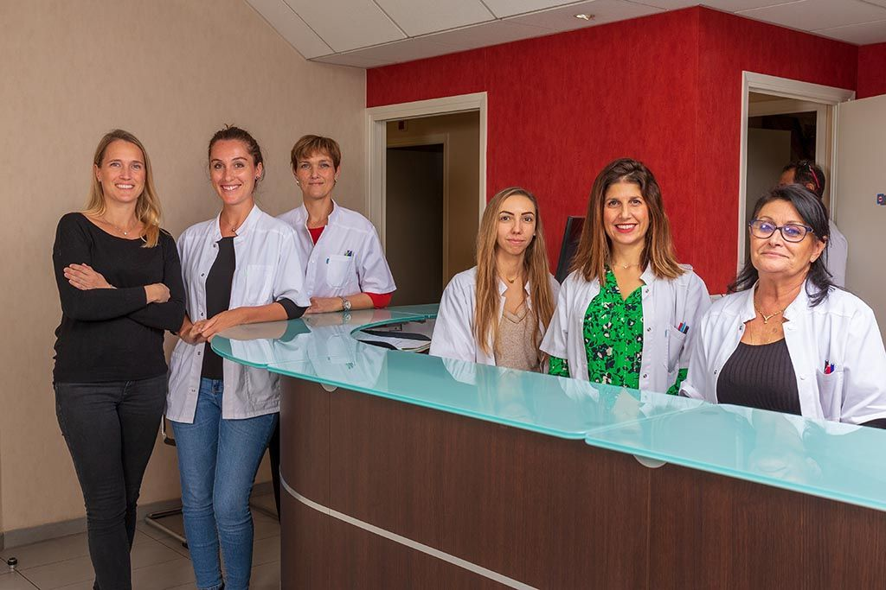
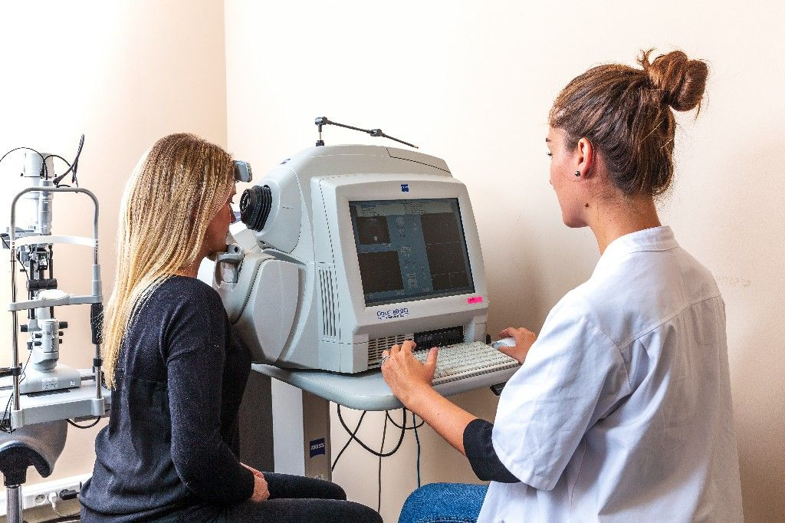
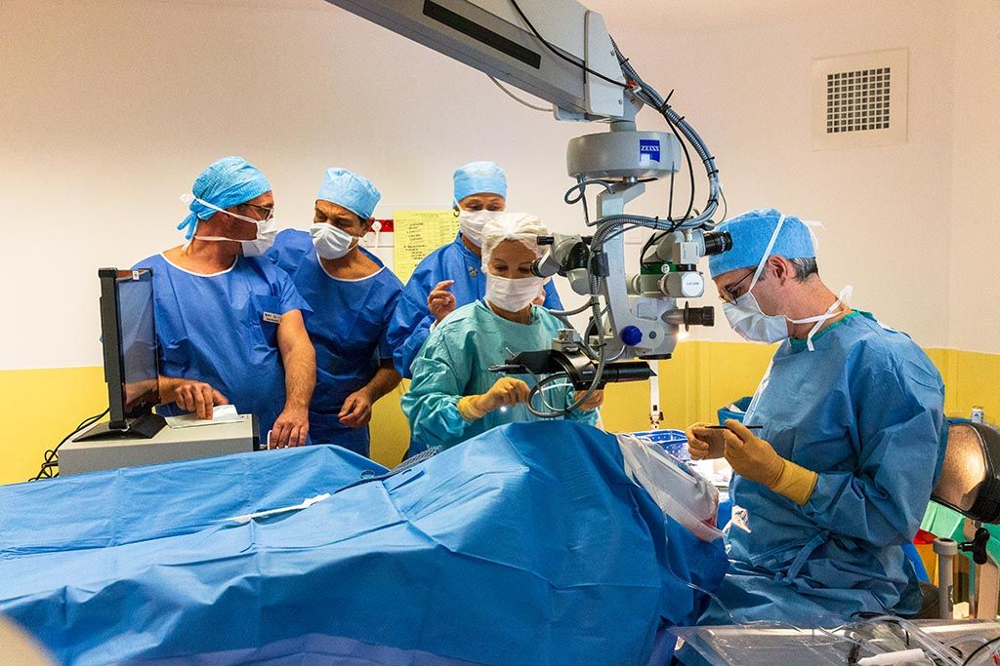
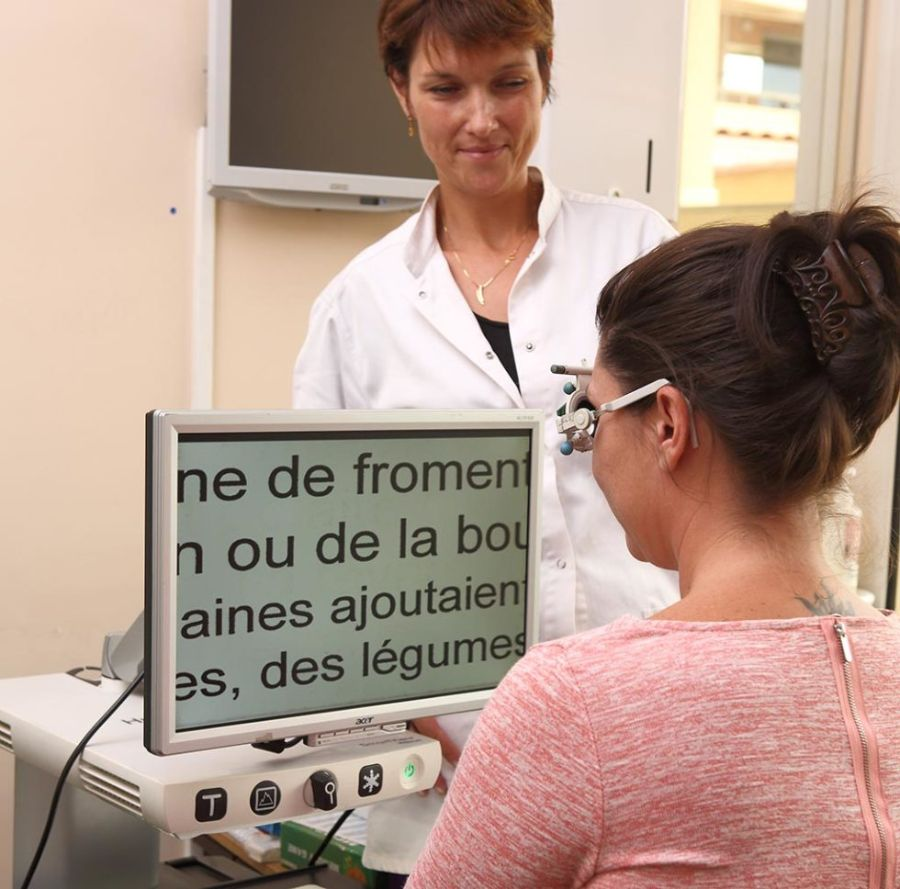

Cabinet d'ophtalmologie · Cannes
Spécialistes de la chirurgie de la rétine et du vitré
Les Drs Alexandre Portmann, Sylvain El-Khoury et Jean-Paul Amar vous reçoivent au 29 boulevard de la Ferrage, à cinq minutes à pied de la gare de Cannes.
Pathologies
Les maladies de la rétine et du vitré
Décollement de rétine
Une urgence chirurgicale : la rétine se sépare de la paroi de l’œil.
Lire la ficheTrou maculaire
Un trou au centre de la rétine, qui se referme par chirurgie.
Lire la ficheSyndromes maculaires
Membranes, œdèmes et hématomes de la macula.
Lire la ficheDMLA
Dégénérescence maculaire liée à l’âge : suivi et injections.
Lire la ficheDécollement postérieur du vitré
Corps flottants et éclairs lumineux à faire examiner.
Lire la ficheForte myopie
Un œil plus fragile, à surveiller régulièrement.
Lire la ficheCataracte
Le cristallin devient opaque et se remplace par un implant.
Lire la ficheGlaucome
Une atteinte silencieuse du nerf optique, à dépister tôt.
Lire la fiche
Le cabinet
Une équipe dédiée à la rétine, à Cannes depuis 1989
Trois secrétaires et trois orthoptistes, dont deux formées à la basse vision, accompagnent les médecins dans un cabinet de cinq salles de consultation.
Le cabinet est à cinq minutes à pied de la gare, et le parking de la Ferrage permet de se garer à proximité.
Équipements
Un plateau technique complet sur place
- OCTImagerie de la rétine et du nerf optique
- RétinographeDépistage de la rétinopathie diabétique
- IOLMaster et échographieCalcul des implants de cataracte
- Vidéo-endoscopieChirurgie endoculaire


Chirurgie
Un bloc opératoire équipé pour la rétine
Les interventions ont lieu à la Polyclinique Oxford de Cannes, dans une unité de chirurgie ophtalmologique équipée pour la chirurgie rétinienne. Les trois chirurgiens pratiquent également la chirurgie par vidéo-endoscopie endoculaire.
L'équipe médicale
Trois chirurgiens vitréo-rétiniens
Rééducation
Basse vision
Lorsque la vision ne peut plus être améliorée par des lunettes, un traitement ou une chirurgie, nos orthoptistes formées à la basse vision réalisent un bilan et des séances de rééducation pour mieux exploiter les capacités visuelles restantes.

Préparer votre consultation
Documents à apporter
Carte Vitale, carte de mutuelle, ordonnances et examens récents.
Honoraires
Médecins conventionnés en secteur 2. Les dépassements peuvent être pris en charge par votre complémentaire santé.
Délais d'attente
Le cabinet accueille les urgences rétiniennes : la consultation peut parfois prendre du retard. Merci de votre compréhension.